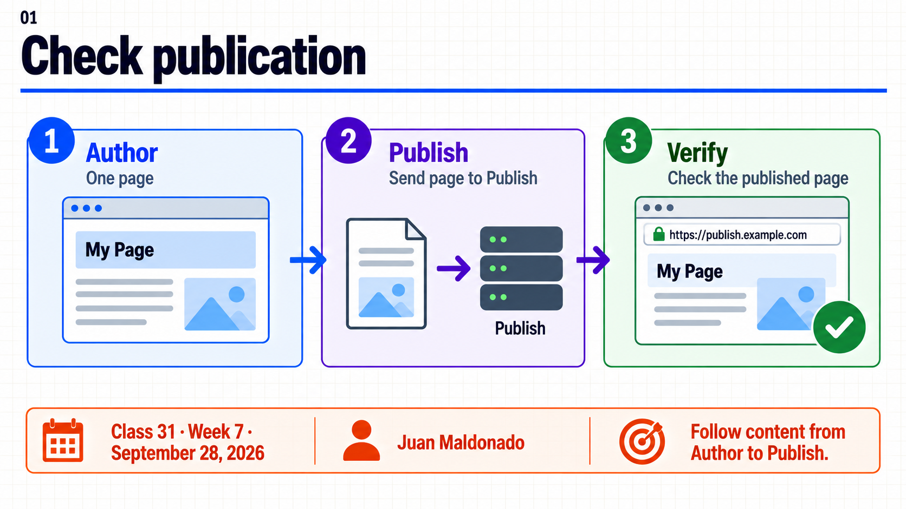
Topic summary
AEM as a Cloud Service uses Sling Content Distribution to move selected content through an external distribution service. The publish agent exposes two consolidated queues: persisted and fully published. ReplicationStatus reports action and queue state, while the target resource supplies the final content check. The local SDK uses a classic replication agent; it demonstrates the result on Publish but not the Cloud queues.
30-minute agenda
| Time | Slides | Focus |
|---|---|---|
| 0–4 | 1–2 | Define one path, destination and expected version. |
| 4–10 | 3–5 | SCD, the two queues and dependency scope. |
| 10–16 | 6–8 | Traceable change and agent-specific ReplicationStatus. |
| 16–26 | 9–10 | Investigate a pending path and compare local proof. |
| 26–30 | 11–12 | Decision at the Publish boundary. |
For a 60-minute session, add guided local execution and discussion of the supplied Cloud queue case. The instructor provides the fixture and evidence.
Complete slide deck
Copy each complete numbered image to PowerPoint or download its PNG. The Spanish guide supplies the walkthrough and expected evidence.
{kind=link}
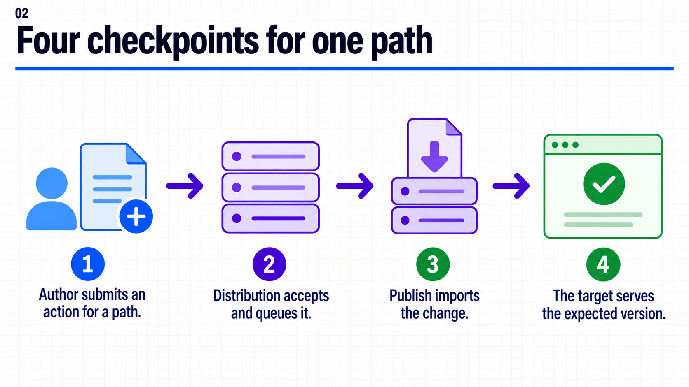
{kind=link}
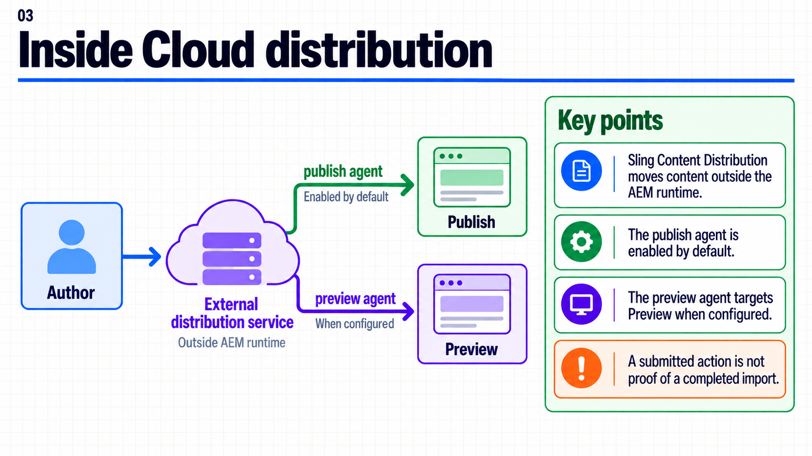
{kind=link}
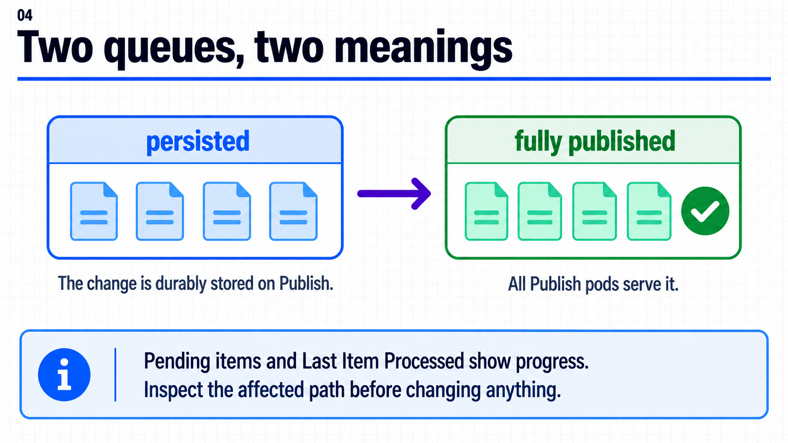
{kind=link}
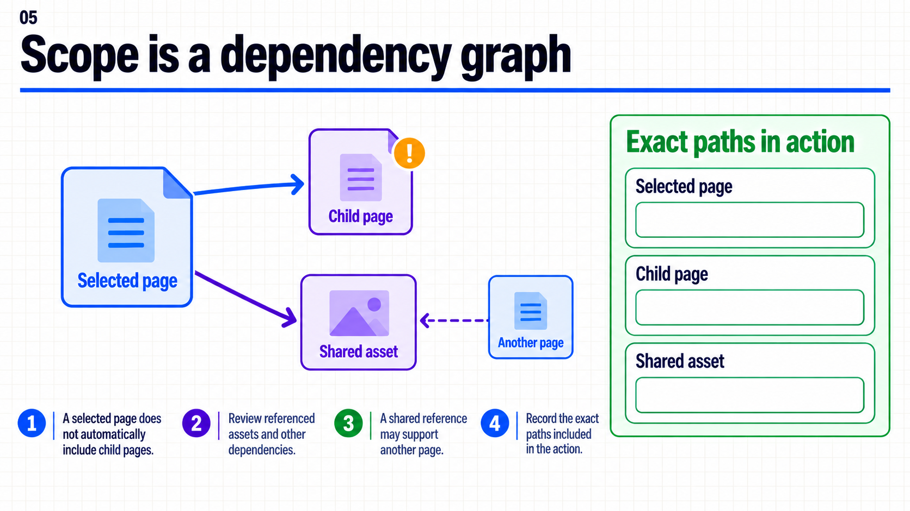
{kind=link}
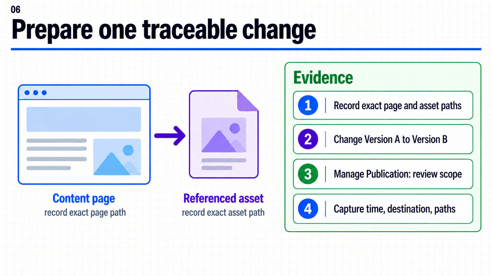
{kind=link}
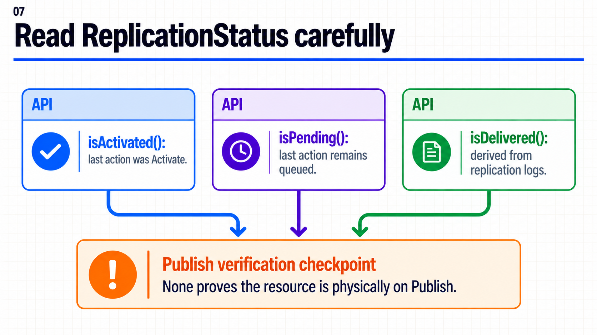
{kind=link}
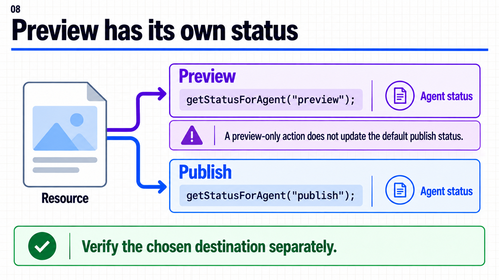
{kind=link}
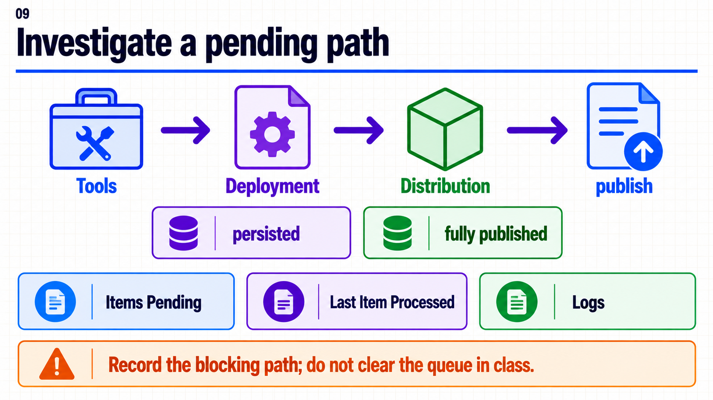
{kind=link}
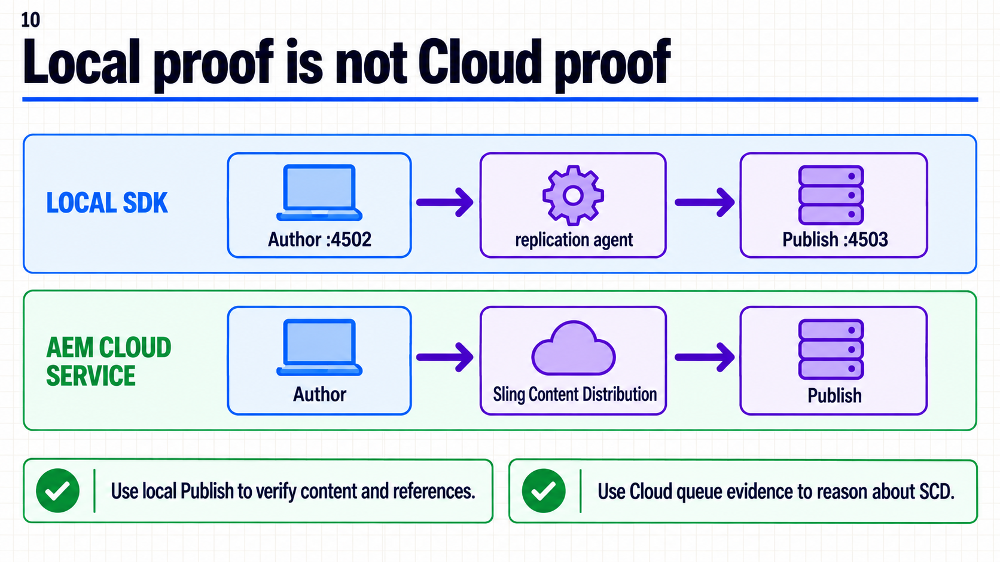
{kind=link}
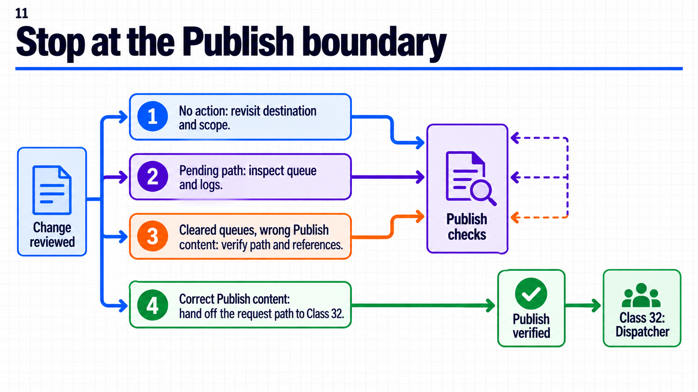
{kind=link}
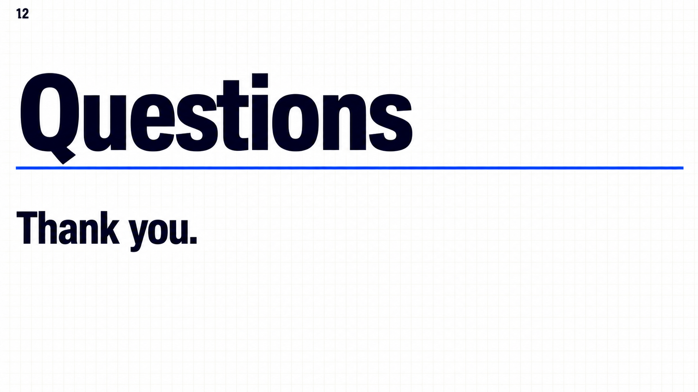
{kind=link}
Demo local y caso Cloud
Prepara Author en localhost:4502 y Publish en localhost:4503 con el mismo proyecto. La guía paso a paso usa una página y un asset con paths registrados, compara Versión A con Versión B y comprueba ambos recursos en Publish.
La demo requiere un agente local configurado siguiendo la guía oficial del SDK. Para las colas SCD se usa un caso didáctico con evidencia simulada; no representa una ejecución Cloud registrada.